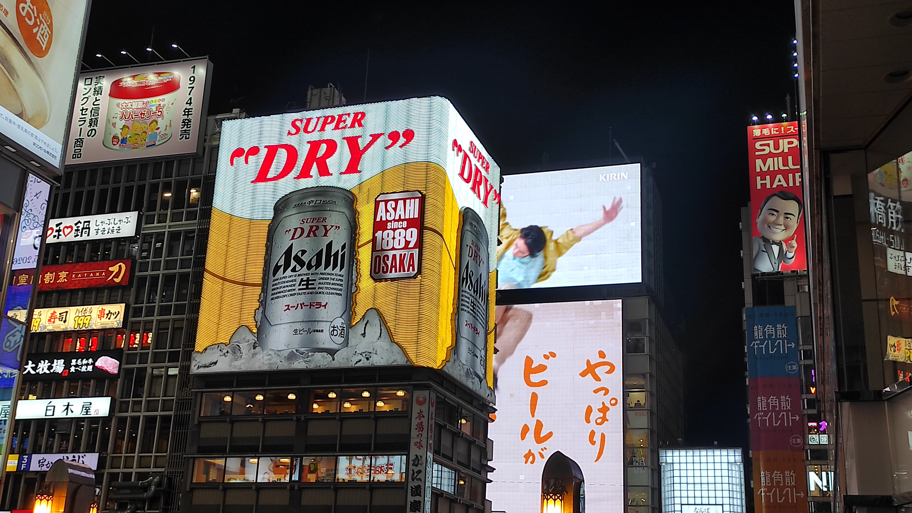

2026 is Japan time. After having been back to Asia in 2025 for the first time in over 13 years with my mongolian-chinese trip, we decided this time to take it one step further and explore the land of the rising sun. Since this was our first time in the country, we opted for the classic, 'introductory' japanese itinerary that consisted in the following stops: Tokyo, Hakone, lake Kawaguchi, Kyoto, Nara and Osaka before flying to tropical Japan in the Okinawa prefecture, to a pacific paradisiacal island called Ishigaki. Last but not least we visited the capital of Taiwan, Taipei, where we ended our journey and sadly also our 2026 summer.